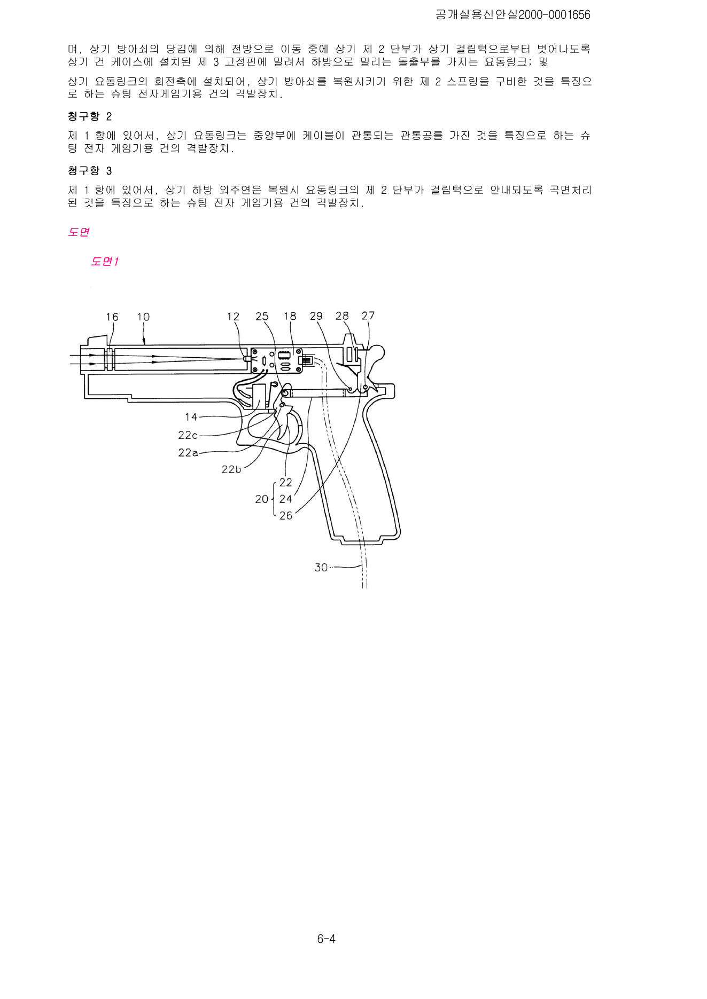
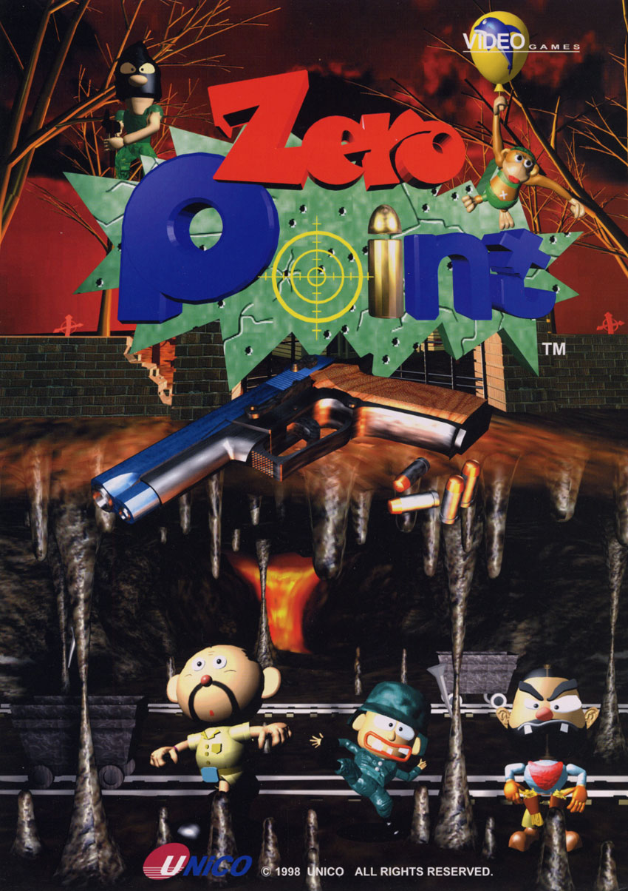
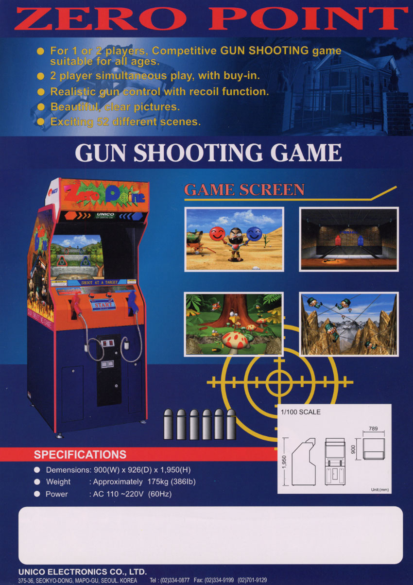
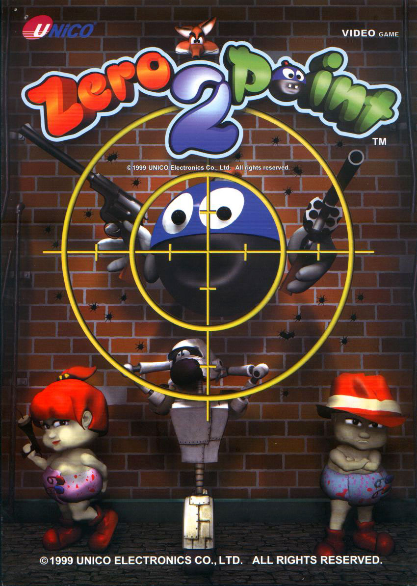
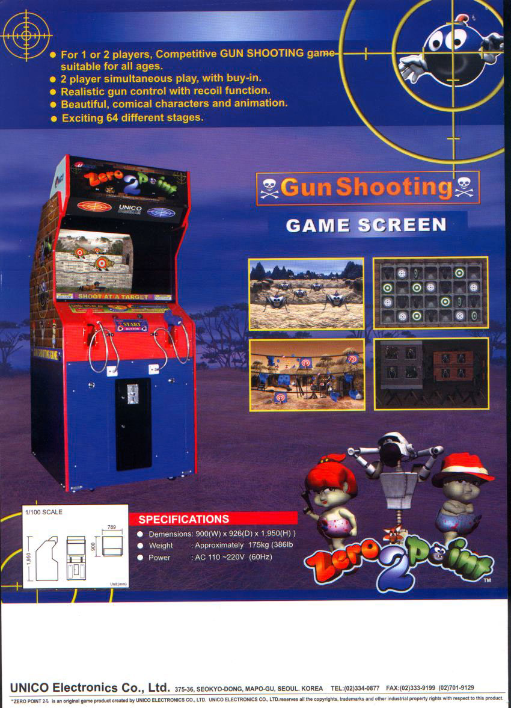
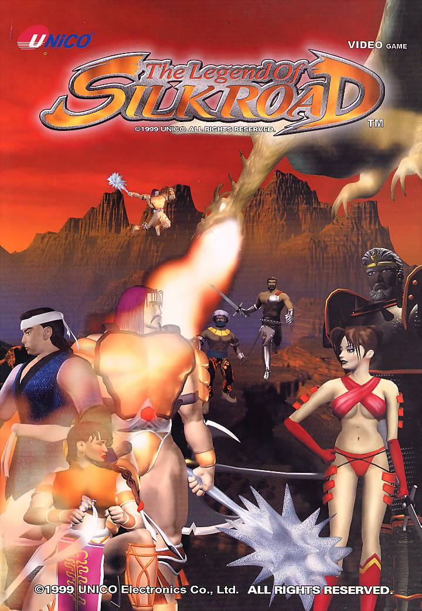
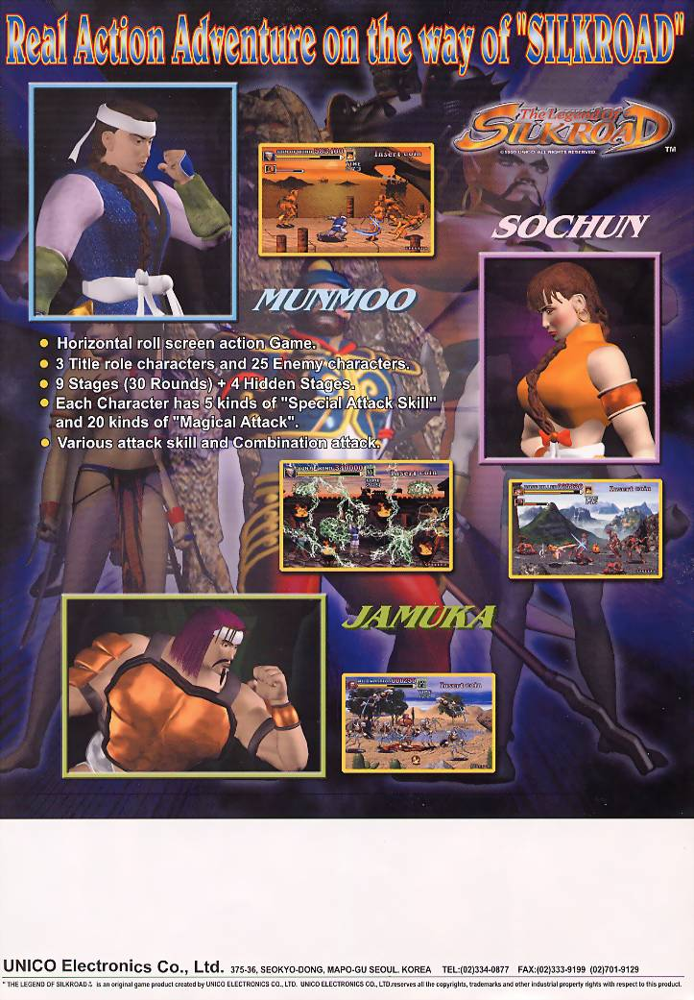
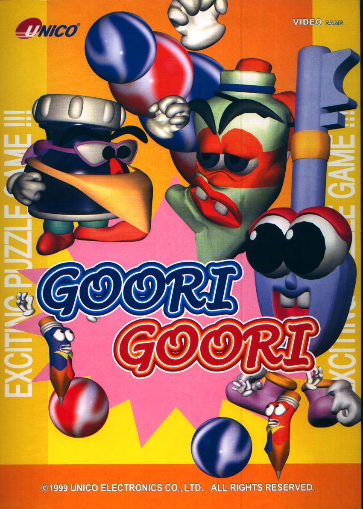
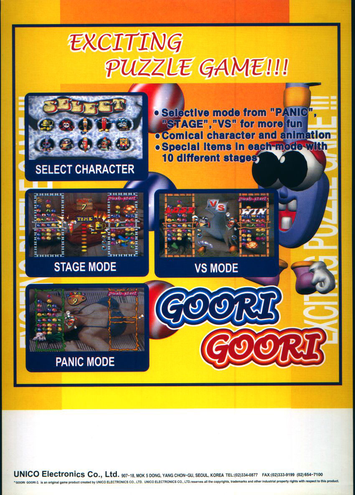

An Arcade Company Hiding in Plain Sight
UNiCO Electronics is easy to underestimate if its history is approached only through a list of surviving arcade ROMs. To many players outside South Korea, the name appears briefly on a handful of 1990s games: Dragon Master, Fancy World, Burglar X, Zero Point, The Legend of Silkroad. Seen that way, UNiCO can look like one more small Korean game label that appeared during the fighting-game boom, made a few boards, and disappeared.
That picture is wrong in several important ways. UNiCO existed before its first known internally developed arcade game, had already built a significant export business before entering original game development, maintained an in-house research organization, designed its own hardware and controls, filed amusement-related patents, exported complete products internationally, and simultaneously acted as a Korean distributor for major foreign arcade manufacturers. In 2001 it did not vanish. It changed its name to UNIANA and continued operating, eventually expanding further into console publishing, amusement distribution, game development and manufacturing.
The surviving record therefore tells a much richer story than the game list alone. UNiCO belongs to a class of arcade companies that blur the convenient categories used by modern databases. It was not simply a developer, not simply a publisher, not simply an importer, and not simply a factory. At different moments it did all of those things. That mixed identity is one reason its catalog has been so easy to misread. A game bearing UNiCO branding may have been developed internally, licensed from another Korean studio, marketed by UNiCO in a particular territory, or merely distributed through the company. Counting every one of those relationships as an original UNiCO game produces an inflated history. Counting only the best-known ROM sets produces an incomplete one.
The more useful approach is to reconstruct the company itself first and then place each game inside that corporate history. That changes the emphasis immediately. The real starting point is not Dragon Master in 1994. It is South Korea in the late 1980s, when UNiCO Electronics was established as an electronics and export-oriented business and began building the technical organization that would later make original arcade development possible.
Before Dragon Master: Building UNiCO, 1988–1993




UNIANA’s own corporate history places the establishment of UNiCO Electronics in January 1988. A current Korean business record gives January 12, 1988 as the company’s start date and identifies Youn Dae Joo as its representative. Because the exact day has not yet been confirmed from a primary corporate-registry record, this history uses January 1988 while noting January 12 as strongly corroborated by later business records.
The distinction matters because UNiCO’s pre-arcade years were not empty prehistory. The available Korean corporate chronology shows a company building formal technical and export capacity almost immediately. A business-history source records a Class-A trade license in February 1988, while secondary historical material describes the young company as manufacturing and exporting arcade-machine or electronic-game parts. The exact composition of those first exports remains difficult to document, so it would be premature to turn that secondary description into a precise product catalog. What can be said with confidence is that export activity was central to the company from the beginning.
By January 1990, according to the official company history, UNiCO had been selected as a military-service special-case company. The following month, the company says it established an in-house technical research institute. Those two milestones are especially important in retrospect. They show that UNiCO’s later game-development operation did not emerge from a tiny sales office suddenly deciding to make software. The company had already invested in organized technical research several years before its first known original arcade release.
The surviving dates are not perfectly tidy. Another business chronology places a military-service-related designation in December 1993, and records differ on when the company moved to its Seogyo-dong address: the official history says November 1992, while another Korean business database gives April 1991. These conflicts should not be silently flattened. They may reflect renewal, reclassification, administrative registration, or later chronology errors. What matters for the larger history is that by the early 1990s UNiCO had a formal research function, an export structure and enough organizational permanence to support a more ambitious move into proprietary products.
The scale of that pre-game business becomes clearer in 1992. UNIANA’s official chronology records that UNiCO received a 10 Million Dollar Export Tower at the 29th Trade Day in November of that year and that its representative director received a presidential commendation. A 2001 Korean business profile independently repeats the same achievement. Whatever the precise mix of products behind those exports, this is strong evidence that UNiCO was already a serious exporter before Dragon Master reached the market.
That point changes how the company’s arcade history should be read. The familiar pattern for many small game firms is that a successful title creates the company. Here the sequence appears almost reversed. UNiCO first built an electronics/export business and research organization; original arcade games then became one branch of an already functioning industrial operation. This helps explain several later features of the company that otherwise look unusual: the recurring presence of credited hardware engineers, the company’s willingness to build custom physical controls, its patent activity around light-gun systems, and its ability to move between board sales, complete machines, overseas exports and outside distribution agreements.
The first direct evidence for a dedicated original-game program appears in contemporary coverage of Dragon Master. A June 1994 Electronic Times report said the game had been developed for more than a year inside UNiCO’s affiliated research institute. That pushes the start of the project back to roughly 1993 or earlier. In other words, the game-development effort was already underway while the company was still consolidating the technical and export base documented in its early corporate history.
Dragon Master was therefore not UNiCO’s beginning. It was the public arrival of a new capability.
That difference is central to the entire story that follows. Once UNiCO entered original arcade development, it did so with more infrastructure behind it than the surviving game list suggests. The company could employ dedicated programmers, artists, scenario staff, hardware engineers, sound personnel and directors. It could show products internationally. It could pursue overseas buyers before domestic release. And when one of its later games became a major export success, the company already had years of experience selling beyond South Korea.
The years from 1988 through 1993 are consequently not a short prologue to be skipped on the way to the games. They explain why UNiCO was able to make the jump at all. They also establish the first major theme of the company’s history: arcade development was never isolated from the rest of the business. Research, hardware, manufacturing, exporting and game software grew together, and the boundaries between those functions remained fluid throughout the UNiCO era and into UNIANA.
The Arcade Pivot Begins
By 1994, that background was about to become visible to players. Dragon Master would put UNiCO’s own name on an original arcade game, but the circumstances of its release already reveal the company’s unusual character. Contemporary reporting describes European orders arriving before the game’s full domestic rollout, while the company was simultaneously securing the formal permissions needed for video-game production in South Korea. The result was not merely a new title. It was UNiCO’s transition from an electronics exporter with a research institute into a recognizable arcade-game developer in its own right.
Dragon Master: UNiCO Becomes an Arcade Developer
Dragon Master is the point at which UNiCO’s internal arcade ambitions become visible in the surviving record. UNIANA’s official chronology places the title in April 1994, but contemporary reporting shows that its path to market unfolded across several separate milestones. UNiCO received a Ministry of Culture and Sports video-game production permit in May, and a June 10 Electronic Times report said domestic sales were beginning that month. Rather than force those dates into a single “release date,” the evidence is better read as a sequence: a company milestone in April, formal production authorization in May, and a domestic commercial push in June.
The same June report is unusually valuable because it describes what was happening around the game before the Korean sales launch. Dragon Master had been developed for more than a year inside UNiCO’s affiliated research institute. European buyers had already placed orders for roughly 2,000 boards worth about one million U.S. dollars, and the game had recently been shown at a Spanish game exhibition. For a company making its first documented internally developed arcade game, that is a striking entrance. UNiCO was not testing the waters with a handful of local machines and waiting to see what happened. Its existing export machinery was already being applied to the new product.
That helps explain why Dragon Master matters even if the game itself never became one of the globally dominant fighting titles of the period. It demonstrates the industrial logic behind UNiCO’s move into game development. The company already knew how to sell overseas, already had a research institute, and already had an export identity. Original software gave it something more valuable to export than anonymous electronics or components: a proprietary arcade product carrying its own name.
The First Recoverable Development Team
The surviving Dragon Master credits also make it possible to see the company as a group of people rather than a logo. No Young Ho and Oh Se Bong are credited for programming. Na Jong Yong and Oh Se Woo handled scenario work. Graphics credits name Oh Hyun Sook, Lee Ok Ryea and Kim Eun Sook. Hong Seog Gil and Lee Chang Bum are credited for hardware, while Suk Youn Joo handled music and sound. Nam Nam Ki is named as director. Youn Dae Joo and Youn Hang Joo appear in special thanks.
For a first documented original arcade project, this is not a skeletal credit roll. It shows distinct programming, scenario, graphics, hardware, sound and direction functions. Just as important, several of these names appear again later. Oh Se Bong, Na Jong Yong, Hong Seog Gil, Suk Youn Joo and Nam Nam Ki reappear in Fancy World. Na Jong Yong continues into the Burglar X generation and later UNiCO projects. Hong Seog Gil returns in later hardware work. The credits therefore support what the corporate history already suggests: Dragon Master came out of an internal development organization, not a one-off contract assembled around a borrowed label.
The hardware credits are especially significant. UNiCO’s later history would repeatedly blur the line between making game software and making the physical systems that surrounded it. Dragon Master already gives hardware engineering a named place inside the team. That detail becomes more important once the company reaches the Zero Point era, when controls and shooting hardware become part of the product identity and the company begins filing its own industrial-property claims.
Why the Logo Alone Is Not Enough
Almost immediately, however, UNiCO’s catalog becomes complicated. Super Toffy, also from 1994, carries UNiCO involvement, but surviving technical documentation identifies Midas as the developer and UNiCO as the licensee. That makes it commercially relevant to UNiCO’s story without making it an original UNiCO development.
This distinction sounds minor until one tries to count the company’s output. Arcade databases often organize games around manufacturer strings, copyright notices or ROM labels. Those are useful clues, but they can collapse very different relationships into one field. A company can develop a game, license it, distribute it, manufacture boards for it, sell it in a territory, or place its name on marketing material without having created the software. UNiCO did several of those things during the same period.
For that reason, Super Toffy belongs in the company history but not in the confirmed original-development tally. It is the first clear warning against building UNiCO’s history by simply adding every game associated with the name. The same problem becomes even more visible in 1996, when SunA-developed titles appear within UNiCO’s commercial network.
Building a Real Product Line, 1995–1996
After Dragon Master, UNiCO did not retreat from original development. The company’s own chronology records Master Fury in August 1995 and Fancy World: Earth of Crisis in September. Both titles present dating problems because the surviving arcade programs carry 1996 UNiCO copyrights and later databases commonly place their release in 1996. The evidence is not strong enough to justify throwing out either side.
The responsible solution is to preserve the distinction between company chronology and surviving build evidence. For Master Fury—also encountered as Master’s Fury—the August 1995 entry is treated as a genuine company milestone, while the preserved arcade build belongs to 1996. A later PlayStation adaptation, The Masters Fighter, appeared in Japan in 1997, but that console afterlife is separate from the original arcade identity. Fancy World is handled in the same cautious way: September 1995 remains the company’s own milestone, while the surviving software carries a 1996 copyright.
These date conflicts are useful rather than merely annoying. They are reminders that arcade games did not always move from development to announcement to export to local sale in one clean calendar step. A corporate history may record completion, unveiling or an internal commercial milestone. A surviving ROM may preserve a later revision or the copyright year of the version that happened to survive. Without a period sales notice fixing a single public launch date, pretending that one source must be “wrong” would create more certainty than the evidence supports.
Fancy World is particularly important because its credits reconnect directly to the Dragon Master team. Oh Se Bong returns in programming; Na Jong Yong in scenario work; Hong Seog Gil in hardware; Suk Youn Joo in music and sound; and Nam Nam Ki again in direction. Kim Uk Hyun and Nam Ki Sung appear in graphics roles. That overlap is strong evidence of continuity inside UNiCO’s development operation. By this point the company was not simply producing isolated games under the same corporate banner. It had a recurring internal staff carrying knowledge from one project to the next.
Magic Purple, which the official chronology dates to August 1996, is easier to place. Surviving records also support 1996, so there is no major year conflict to resolve. Its importance in the larger history is cumulative. Dragon Master had established the development capability; Master Fury and Fancy World showed that the effort continued; Magic Purple added another original product during the same expansion phase. By the middle of the decade UNiCO had become a repeat arcade developer rather than an electronics company with one experimental game.
Development and Distribution Side by Side
At the same time, original development was only one part of the business. Back Street Soccer and Ultra Balloon are associated with UNiCO in surviving arcade documentation, but both are identified as SunA-developed products with UNiCO license or distribution involvement. Back Street Soccer documentation even preserves a distributor setting for UNiCO, a useful technical clue that the company’s role could be commercial and regional rather than developmental.
Placed beside Super Toffy, these titles reveal a business model that would become increasingly characteristic of UNiCO and later UNIANA. The company could invest in its own internal games while also handling outside products. Those activities were not contradictory. A distributor already connected to arcade operators and overseas buyers had obvious advantages when selling its own games, while outside distribution gave the company more products to move through the same commercial network.
Jumping Break provides another useful boundary case. The game itself is attributed to F2 System, but a surviving U.S. sales flyer is branded by UNiCO, supporting a marketing or publishing role in at least one territory. The exact regional contract remains unresolved, so Jumping Break belongs in the commercial history without being counted as an internally developed UNiCO title.
This is why a role-aware catalog is essential. Super Toffy, Back Street Soccer and Ultra Balloon matter to UNiCO history because they show the breadth of its arcade business. They do not belong among the confirmed internally developed titles. Keeping those two truths together produces a more accurate company history than either excluding the games entirely or claiming them as UNiCO creations.
Burglar X and a Changing Development Team
Burglar X marks the end of this first development phase and the beginning of another. UNIANA’s modern chronology records the game in December 1996, while the surviving program carries a 1997 UNiCO copyright and later game databases generally place it in 1997. As with Master Fury and Fancy World, both milestones are retained: December 1996 as the official-company chronology point and 1997 as the preserved copyright evidence.
The credits are more revealing than the date. Koo Eun Joong and Kim Yang Su are credited in planning, with Kim Yang Su and Na Jong Yong in graphics. G.D. Hwang and Park Hyo Jin are credited for BGM. Koo Eun Joong and Lee Chang Gyu appear in programming, Jun Jung Ok in hardware, and Koo Eun Joong also serves as director. Choi Gyu Keun, Lee Gi Seon and Moon Sung Ok appear among the assisting staff.
Na Jong Yong provides a direct thread back to the Dragon Master and Fancy World generation, but Burglar X also introduces or elevates names that become important in the next period. Koo Eun Joong becomes a central programmer and director. Lee Gi Seon and Moon Sung Ok recur in later graphics work. Park Hyo Jin appears in later music and sound credits. The hardware side also changes personnel. The result is not a clean replacement of one team by another, but an overlap between generations.
That overlap matters because the next major UNiCO success did not come out of nowhere. The company that would produce Zero Point had already spent several years building games, revising its staff, and learning how to combine internal development with export and distribution. Burglar X sits directly on that fault line. It still belongs to the mid-1990s 2D development run, but its personnel point toward the group visible in Zero Point and The Legend of Silkroad.
It is tempting to make Zero Point a 1997 climax to this chapter because UNIANA’s present-day history lists a November 1997 milestone for the title. Contemporary evidence does not support treating that as the commercial release. Electronic Times explicitly identified March 1998 as the release date in a later award profile, another 1998 report described the game as having been developed that spring, and the surviving manual and software carry 1998 copyrights. The November 1997 company entry is therefore best understood as an earlier internal milestone, announcement, completion stage or chronology discrepancy—not as proof that the finished game was commercially released that year.
That reclassification gives the 1994–1997 period a cleaner historical shape. It begins with Dragon Master, when UNiCO’s research organization first becomes visible as an original arcade-development team. It continues through a run of internally developed titles while the company simultaneously licenses and distributes outside games. It ends with Burglar X and a changing staff structure poised for the company’s biggest international arcade breakthrough.
On the Edge of the Breakthrough
By the close of 1997, UNiCO had achieved something more durable than a single hit. It had established an internal development culture, accumulated several years of arcade-production experience, maintained identifiable hardware expertise, and learned to operate as both creator and middleman. The company’s catalog was already diverse enough that modern databases can easily overcount it, but the underlying business was more sophisticated than a raw title total suggests.
The next phase would make that sophistication visible on a much larger scale. Zero Point combined UNiCO’s software development, custom physical-control engineering and export experience in one product. Its overseas sales would give the company its clearest arcade success yet, while the same late-1990s period would also see UNiCO deepen its relationship with Konami and continue developing its own games.
What had begun with Dragon Master as a new capability inside an established exporter was about to become one of the defining parts of the company’s identity.
Zero Point Changes the Scale, 1998




Zero Point is the title that changes the scale of the UNiCO story. The company had already spent several years developing arcade games, but nothing in the surviving record before 1998 matches the international commercial impact documented for this release. It is the point where UNiCO’s separate strengths—software, hardware, custom controls, cabinet engineering and overseas sales—come together in a product that can be measured not only by credits and surviving boards, but by export volume.
The date deserves careful treatment because UNIANA’s modern corporate history places a Zero Point milestone in November 1997. Contemporary evidence is stronger for the public commercial release. A June 1998 Electronic Times New Software Product profile explicitly gives March 1998 as the release date, while another November report described the game as having been developed “this April.” That one-month conflict cannot be resolved cleanly from the surviving reports, but both contemporary accounts place the commercial product in 1998, and the surviving manual and game software also carry 1998 copyrights. The best-supported treatment is therefore a 1998 commercial release, with the November 1997 company-history entry preserved as an earlier development, completion or announcement milestone.
Once the title is placed correctly in 1998, the sales story becomes coherent. By November, Electronic Times reported that UNiCO had exported roughly 2,300 units to Europe, 1,200 to the United States and 250 to Japan. The reported value was about four million U.S. dollars in only six months. UNiCO was selling both kits and complete machines: contemporary pricing put kits at roughly 800 to 1,200 dollars and complete units around 1,500 dollars. The company expected the total to climb to at least six million dollars by year-end.
UNIANA’s later corporate history gives the final 1998 export result as 5.2 million dollars for a single domestically developed product. That year-end figure is compatible with the four-million-dollar November snapshot and is the stronger number to use for the completed year. A 2001 profile repeats the 5.2-million-dollar achievement but assigns it to 1997; because contemporary 1998 sources establish the actual launch and sales period, that later year is best treated as retrospective chronology drift rather than evidence for an earlier release.
For UNiCO, the significance was obvious. The company had already been an exporter before it made games, but Zero Point proved that an internally developed Korean arcade machine could itself become a meaningful export product in Europe, North America and Japan. This was no longer simply a case of selling components or moving other companies’ equipment. UNiCO had designed something of its own, placed its own name on it, and found an international market.
An Integrated Arcade Product
Zero Point also makes it impossible to describe UNiCO as merely a software developer. Period coverage emphasized the physical features of the game: two-player light guns with recoil, a sequence of more than fifty short stages, changing stage order, and a deliberately cartoon-like presentation that softened the violent tone associated with many gun games. The experience depended on the relationship between software and custom controls, and UNiCO protected parts of that engineering in the same year.
On June 29, 1998, a Korean utility-model application was filed for a gun-trigger mechanism for shooting electronic game machines. Youn Dae Joo is named as inventor, with Youn and UNiCO Electronics as original assignees. A second filing followed on July 6 for a shooting-game device, again naming Youn and UNiCO. The surviving patent records include mechanical and apparatus drawings rather than merely a software description.
Those filings add an important dimension to Youn Dae Joo’s role. He is the long-running corporate figure at the center of UNiCO and later UNIANA, but the patent record ties his name directly to arcade hardware development at the moment of the company’s biggest documented export success. That does not mean every part of Zero Point was personally designed by the company president. It does mean that the boundary between management and product engineering was unusually close in the surviving record.
The same integrated approach helps explain why Zero Point traveled well. UNiCO could offer a board or kit to operators who already had cabinets, while also selling complete machines. It could design the controls, protect the mechanism, and support the product through an export network that predated its game-development business. Zero Point was therefore not just a successful program. It was a compact demonstration of the company’s entire industrial model.
The game also brought institutional recognition. UNIANA’s chronology lists a New Software Product Award, a Ministry of Information and Communication award at SOFT EXPO 98, and an export-merit commendation connected with Zero Point. Contemporary December 1998 reporting confirms the title among that year’s New Software Product Award winners and as a SOFT EXPO award recipient. For a company whose original arcade program had become visible only four years earlier, Zero Point represented a sharp jump in status.
Silkroad: From Development Milestone to Finished Release
The next major internal project creates another date problem, but this time contemporary evidence is particularly useful. UNIANA’s present history lists The Legend of Silkroad in November 1998. If that date is read as a finished commercial release, however, it conflicts with what was being reported at the time. On November 19, 1998, Electronic Times described a new UNiCO action game under the closely related Korean working title “Silkroad-ui Sinhwa,” or “Myth of the Silk Road,” as only about eighty percent complete and being prepared for exhibition at the following year’s Las Vegas amusement show.
That makes a finished November 1998 commercial release very difficult to sustain. The preserved game carries a 1999 copyright, MAME identifies it as a 1999 UNiCO title, and the surviving European sales flyer is also dated 1999. The most defensible reconstruction is therefore that the modern company chronology records a 1998 development or company milestone, while the completed commercial title belongs to 1999.
The Legend of Silkroad is valuable for another reason: its credits show the Burglar X generation becoming a mature development team. Jong-yong Na handled planning, maps and effects. Gi-seon Lee, Ki-hong Kim and Sung-ok Moon appear in character design. Eun-joong Koo is credited as main programmer and director, with Chul-joong Kwak as assistant programmer. Dae-yong Kweon composed the music, and Jeong-ok Chun handled hardware.
The pattern is now unmistakable. Names first visible in the mid-1990s are not disappearing after one project; they are shifting roles and reappearing across games. Koo has moved into a central programming and directing position. Na remains a creative thread stretching back toward the first generation. Lee and Moon continue in graphics. Jeong-ok Chun anchors the hardware side. The company’s internal development culture is becoming easier to see precisely because the credits remain consistent across otherwise very different games.
Technically, Silkroad also marks a step up from the simpler hardware associated with UNiCO’s earliest games. Surviving records identify a Motorola 68EC020-class processor running at 16 MHz and a sound arrangement built around a Yamaha YM2151 with dual OKI6295 chips. The hardware is still firmly within the 2D arcade tradition, but it demonstrates that UNiCO was continuing to invest in its own board-level capability rather than moving immediately to commodity PC hardware.
1999: Development and Distribution Grow Together








By 1999, UNiCO’s original-game line and its distribution business were expanding at the same time. Zero Point 2 appears in the official chronology in February, and surviving title records agree on 1999. As a direct sequel to the previous year’s light-gun success, it extended the company’s most commercially proven product line while retaining the same broad combination of software and custom shooting hardware.
Goori Goori followed in September. Unlike the company’s fighting, shooting and scrolling-action games, it was a puzzle title. Its presence matters because it shows that UNiCO had not reorganized itself exclusively around whatever genre had just sold best. Even after Zero Point, the company continued experimenting with other forms of arcade software.
At almost the same moment, however, UNiCO’s relationship with Konami was becoming one of the most important parts of its Korean business. UNIANA’s corporate chronology lists beatstage and Hyper BishiBashi Champ in 1998 and then a growing series of Konami rhythm and amusement products in 1999. A contemporary Korea Economic Daily report from September 6, 1999 explains what that relationship looked like on the ground.
According to the report, UNiCO had been importing DanceDanceRevolution into Korea since June 1999. Konami PCB boards were brought into the country and supplied to arcade-machine wholesalers, who then completed machines for the local market. The article estimated that about 200 units had been sold by that point. It also stated that UNiCO had already imported and sold Konami’s beatmania during the latter half of 1998 under the Korean name beatstage.
That evidence is particularly useful because it prevents another catalog mistake. DanceDanceRevolution and beatmania are obviously not UNiCO-developed games. Their presence in the company chronology records a Korean import, distribution and market-supply relationship. The same company that was exporting Zero Point under its own name was importing Konami boards and helping place them into Korean arcades.
By 1999, then, UNiCO was operating in at least four overlapping arcade roles. It developed proprietary games. It exported its own boards, kits and complete machines. It engineered physical controls and related hardware. And it imported and distributed major Japanese products for the Korean market. That combination is much closer to the later UNIANA business than the simpler image of a small arcade developer suggested by ROM lists.
A Company Becoming More Formal
The late-1990s expansion was institutional as well as commercial. UNIANA’s history records certification of its in-house research institute by the Korea Industrial Technology Association in February 1999, production and distribution registrations with the Ministry of Culture in May, participation in SICAF 99, and a move to the Mok-dong office in June. Other Korean business databases preserve similar events, though some months differ.
The chronology is important because it shows a company formalizing around its expanded role. UNiCO had possessed an internal research function since the beginning of the decade, but by 1999 that research organization was being certified within a company now handling original software, export products and a growing stream of imported arcade equipment. The corporate structure was catching up with the complexity of the business.
This broader organization also helps explain how UNiCO could continue developing its own games without relying on them as its only revenue source. A company that can distribute popular foreign products has a different risk profile from a studio that lives or dies by every internally produced game. That mixed model would prove important when the arcade market changed in the following years.
The Age of Heroes and the End of the UNiCO Decade
The final major original title of the pre-rename period is The Age of Heroes, also encountered as Silkroad 2. UNIANA’s chronology records the game in July 2000, and several arcade-history records preserve a 2000 UNiCO copyright. The version surviving in MAME, however, is revision 0.63 dated February 7, 2001 and is consequently classified there as a 2001 set.
Once again, the most useful treatment is not to force the evidence into one date. The title identity and company milestone belong to 2000; the specific preserved MAME revision belongs to 2001. That distinction is consistent with the date methodology used elsewhere in the UNiCO catalog and avoids mistaking the age of a surviving revision for the birth of the game itself.
The credits again show continuity within the development group. Eun-joong Koo remains the main programmer. Jong-yong Na contributes stage design and graphic effects. Sung-ok Moon and Ki-hong Kim continue in character design, and Chul-joong Kwak remains among the assistant programmers. The team had changed substantially since Dragon Master, but it had not been repeatedly rebuilt from scratch. The surviving credits instead show an evolving internal organization with recurring specialists.
By 2000, though, original development was only one visible line in the official chronology. The company also lists a substantial run of Korean releases for outside arcade products, including DanceDanceRevolution 3rdMIX, GuitarFreaks 3rdMIX, Silent Scope, DanceFreaks, Fighting Mania, PercussionFreaks mixes and ParaParaDancing. The same period includes additional arcade-hardware intellectual-property activity and venture-company certification.
That makes the end of 2000 a natural dividing line in the company story. UNiCO had entered the decade primarily as an electronics exporter with a technical research organization and no documented internally developed arcade catalog. It was leaving the decade as three things at once: an original game developer with a recognizable internal team, a hardware and amusement-engineering company capable of designing controls and complete products, and an important Korean distributor for foreign arcade brands.
Those three identities were not competing with one another. They reinforced one another. Export experience helped UNiCO sell its own games. Hardware competence helped distinguish those games. Distribution relationships kept the company connected to changing arcade trends and major overseas manufacturers. The combination created a more resilient business than original development alone could have provided.
The Late-1990s Hinge





The years from 1998 through 2000 are the hinge in UNiCO’s history. Before Zero Point, the company had proven that it could develop arcade games. After Zero Point, it had proven that one of those games could generate substantial international exports. At almost the same time, its Korean relationship with Konami was expanding into rhythm games and other major arcade products. The company was no longer merely adding games to an electronics business; arcade development, engineering and distribution had become central, mutually supporting parts of the operation.
This dual strategy also helps explain UNiCO’s survival. Many smaller arcade developers are remembered because their software survived in emulation even though the companies themselves did not. UNiCO followed a different path. Its identity was broad enough to move with the market. Internally developed games remained important, but they existed alongside imported products, physical machine engineering and an increasingly formal research organization.
That flexibility becomes even more visible in 2001. The company would change its name from UNiCO Electronics to UNIANA, push further into 3D arcade development, and begin diversifying toward console, PC, mobile and online games. The name change can easily look like the end of the story if one follows manufacturer labels rather than the company itself. In reality, it was the next stage of the same business.
UNiCO Becomes UNIANA, 2001
The name UNiCO Electronics disappears from the arcade record in 2001, but the company itself does not. UNIANA’s official corporate history records a change of corporate name to UNIANA Co., Ltd. in June 2001. Contemporary Electronic Times coverage from August described the company as having changed its name from UNiCO the previous July. The safest reading is not that two different companies existed, but that the formal and public stages of the same rename were remembered slightly differently. For this history, June 2001 is retained as the official company milestone, with the period July wording noted as a contemporary variation.
More important than the one-month discrepancy is everything that did not change. Youn Dae Joo remained the central executive figure. The company was still described as an arcade-game developer and distributor. Its relationships with overseas manufacturers continued. Its research organization continued producing arcade technology. There is no evidence of liquidation, an asset sale, a takeover, or a newly created successor company replacing UNiCO. The documentary record instead shows one operating business broadening its ambitions under a new name.
That continuity matters because a manufacturer list can make 2001 look like a hard ending. A database sorted by the UNiCO label naturally stops when the label changes. Corporate history does not. UNIANA itself treats its history as continuous from the 1988 founding, and the company’s later arcade and console operations make sense only when the UNiCO years are understood as their foundation.
A Broader Company, Not a Retreat from Arcades
The rename came at a moment when management was explicitly trying to broaden the business. In August 2001, Electronic Times described UNIANA as pursuing a staged diversification strategy extending beyond arcade machines into mobile, PC, video-console and online games. That strategy was not an abandonment of the arcade field. It was an attempt to add new markets around an arcade operation that was still active.
The company chronology itself makes that clear. Konami-linked arcade products continue across the name change, while UNIANA’s own development work continues in the same year. MoCap Boxing appears in the official timeline in July 2001, but it belongs to the company’s imported/distributed Konami-side activity rather than the confirmed original-development count. That distinction is important: the renamed company was simultaneously continuing its outside distribution business and building new arcade products of its own.
Frenzy Express provides the clearest evidence that the development organization survived the rename intact. It appears in UNIANA’s chronology in November 2001 and was described in contemporary Korean coverage as an in-house project that had been under development for roughly a year. Its production therefore straddled the UNiCO-to-UNIANA boundary. The project began while the old name was still in use and reached the market under the new one, making it almost a perfect demonstration that the corporate-name change did not interrupt the engineering operation.
Frenzy Express and the Frontier 3D Transition
Frenzy Express also marks a technical transition. Contemporary October and December 2001 reporting described the game as a full-3D third-person arcade experience built with UNIANA’s proprietary Frontier, or Frontier 3D, engine. Rather than presenting 3D graphics as an imported technology layer, the coverage treated the engine as an internal research result. The company was attempting to carry its long-standing in-house engineering culture into a different hardware and software generation.
The cabinet design made that transition physical as well as visual. Frenzy Express used a scooter- or kickboard-style controller and incorporated vibration or impact feedback. The player was not simply standing at a conventional control panel pressing buttons. The machine turned body movement and a dedicated control structure into part of the game. In that respect it continued the same product philosophy visible in Zero Point: UNIANA was designing the complete arcade experience around software, dedicated input hardware and the cabinet as a single system.
A June 2002 Electronic Times feature adds a name to the research organization behind this shift. It identifies Kim Dong-ho, then director of UNIANA’s research institute, as a leader in the company’s 3D arcade-engine work and credits the institute with developing Frontier as a Korean 3D experiential arcade-game engine. Kim provides a useful human bridge between the older UNiCO development culture and the early-2000s UNIANA technology program.
Frenzy Express therefore belongs in the company history as more than another game release. It shows the renamed firm moving away from the 2D board architectures that had carried Dragon Master, Zero Point and Silkroad while preserving the same basic habit of internal technical development. The platform changed. The company’s tendency to combine software, electronics and unusual physical controls did not.
A Cautionary Case: P.P.R. / Popira
KAMEX 2001 material also places P.P.R., or Popira, in UNIANA’s exhibition orbit, but it should not be folded casually into the company’s internal-development list. A contemporary November 2001 Electronic Times monthly-award listing attributes Popira to D-Gate, even though UNIANA displayed the machine at its own booth. That combination leaves several possibilities—publishing, distribution, collaboration, cabinet supply or some other commercial relationship—but the surviving evidence does not justify choosing among them yet.
This is exactly the kind of case that makes the role-aware census necessary. A trade-show appearance can prove that UNIANA was commercially involved with a product without proving that its development team created the game. Popira is useful evidence of the breadth of UNIANA’s amusement business at the moment of the rename, but for the output count it remains unresolved and excluded from the confirmed internal-development total.
The Konami Relationship Expands Beyond Arcades
The other major continuity line across 2001 was Konami. UNiCO had already been importing and distributing Konami arcade products before the rename, and UNIANA continued doing so afterward. The change of corporate name did not sever that relationship; within a year it expanded into an entirely new platform.
In May 2002, Electronic Times reported that UNIANA had partnered with Konami Marketing Asia and obtained Korean exclusive sales rights to Konami console software, with Metal Gear Solid 2 among the first major releases. A later May report confirmed the Korean launch through UNIANA. The company’s modern history likewise dates the beginning of its console-game business to 2002.
That move makes the 2001 diversification strategy concrete. UNIANA did not abandon the distribution expertise developed in the arcade market. It reused it. A commercial network that had moved Konami arcade boards and machines into Korean amusement centers now became part of a console-publishing and distribution operation. The same relationship that had helped define late-1990s UNiCO therefore became one of the foundations of post-rename UNIANA.
This continuity also explains why the company’s later identity is broader than its surviving original-game catalog. Arcade development remained part of the business, but it now sat beside console publishing, foreign-game distribution and a wider range of amusement products. The corporate name changed just as the company’s operating model was becoming larger than the UNiCO label had historically suggested.
The Name Changed; the Company Did Not
Taken together, the evidence makes 2001 one of the clearest continuity points in the entire UNiCO/UNIANA history. The official chronology gives a June corporate-name change; contemporary press remembered the public change in July. Either way, the same executive leadership, arcade-development activity, research organization and distribution relationships continue across the boundary. The change belongs in the timeline, but it should never be presented as a closure date.
The rename also arrived at exactly the moment when the company was outgrowing a narrow arcade-manufacturer identity. UNiCO had spent the 1990s learning how to develop its own games, engineer hardware, export complete products and distribute outside manufacturers’ equipment. UNIANA kept all of those capabilities while deliberately adding new ones. Frenzy Express shows the arcade-development side moving into proprietary 3D technology and physical simulation. The Konami relationship shows the distribution side expanding from arcades into consoles. Management’s public diversification plans show that these were parts of a broader strategy rather than isolated experiments.
The implication is straightforward: the company starts in January 1988 and has no dissolution date. “UNiCO Electronics” describes the 1988–2001 name period; “UNIANA” describes the same company from 2001 onward. Treating them as separate companies would break the very continuity that the contemporary record, the modern corporate history and the development chronology all demonstrate.
The next stage of the story is therefore not an afterlife. It is a continuation. From 2002 through 2004, UNIANA would add a new run of internally developed arcade-video products while its distribution and publishing businesses kept expanding. That period completes the confirmed fifteen-title original-video baseline and shows what the renamed company actually became once the transition was fully underway.
Completing the Original-Video Line, 2002–2004
After the 2001 rename, UNIANA did not abandon original arcade-video development. The next three years produced a compact but important final run that completes the company’s confirmed historical video-game baseline. The surviving evidence supports four additional original identities after Frenzy Express: Dojeon! OX Survival PLUS in 2002, Hog Wild in 2003, P’s Attack across the 2003–2004 boundary, and S.A.P.T. in 2004.
This period is also where careless counting becomes most dangerous. A less conservative reading can produce a higher total by treating P.P.R./Popira and a pre-PLUS version of OX Survival as separate UNIANA developments. Contemporary evidence argues against doing so. Popira is attributed in period reporting to D-Gate despite its appearance in UNIANA’s trade-show orbit, while the pre-PLUS OX Survival is documented as a project approaching income testing rather than as a clearly separate commercial release. The safer history counts only what can be defended as a distinct, released UNIANA-developed video product.
That conservative approach leaves a cleaner sequence. Frenzy Express establishes that internal development survived the name change. The four titles that follow show UNIANA continuing to experiment with quiz-style play, driving, light-gun design and action-oriented vehicle games while its broader business expanded into console publishing and outside amusement distribution.
Dojeon! OX Survival PLUS: One Confirmed Commercial Identity
UNIANA’s official chronology records Dojeon! OX Survival PLUS in December 2002. A contemporary Electronic Times report from October adds an important earlier stage: UNIANA was preparing an OX Survival game for winter release and was about to begin income testing. That reporting proves that the concept existed before the December PLUS entry, but it does not prove that a separate non-PLUS commercial product reached the market as an independent release.
The distinction matters because an early working title, location test or pre-release build is not automatically a separate game identity. Without evidence of an independently commercialized first version, counting both OX Survival and OX Survival PLUS would inflate the company’s output. The conservative publication treatment therefore recognizes the documented December 2002 PLUS release as the confirmed commercial identity and keeps the earlier OX Survival material as development history rather than a second title.
UNiCO and UNIANA left behind company timelines, surviving software revisions, trade-show appearances and modern database entries that do not always describe the same milestone. The goal is not to maximize the number beside the company name. It is to distinguish development, testing, revision and commercial release carefully enough that the final count means something.
Hog Wild and the PC-Derived 3D Era
Hog Wild followed in May 2003 as a UNIANA-developed driving game. In the larger technical chronology it belongs with the company’s early-2000s move toward PC-derived 3D arcade systems and dedicated physical cabinets. Preserved technical records from the Frenzy Express and Hog Wild era include Pentium III-class hardware, a very different foundation from the Motorola-based 2D boards that had defined much of the classic UNiCO period.
That change in computing platform did not erase the older company pattern. UNIANA still treated the cabinet and the control system as part of the product rather than as an afterthought. The early-2000s machines continued the same integrated approach seen in Zero Point and Frenzy Express: software was only one layer of an amusement product designed around a specific physical experience.
Hog Wild therefore belongs in the original-video census not because it resembles the older UNiCO games technically, but because it demonstrates continuity of authorship across a major technology shift. The company that had once designed its own 2D boards and light-gun mechanisms was now building 3D driving products on newer computer-derived hardware while remaining active as an arcade developer under the UNIANA name.
P’s Attack: New Hardware, Familiar Product Thinking
P’s Attack appears in UNIANA’s chronology in October 2003, while the surviving game carries a 2004 copyright. As elsewhere in the company history, those dates are best kept as separate milestones rather than forced into one. The Korean company chronology supports a 2003 release milestone; the preserved build demonstrates a 2004 software version.
Technically, P’s Attack is especially useful because it shows that UNIANA was not tied to a single post-PC architecture. Preserved technical documentation identifies an ADChips SE3208 processor paired with MagicEyes VRender0 graphics technology, a specialized system-on-chip approach rather than simply another off-the-shelf desktop computer inside a cabinet.
The title also returns the company to light-gun video play, connecting the early-2000s UNIANA period with the Zero Point lineage without merely repeating the older hardware. The control concept remained familiar while the underlying electronics changed substantially. That willingness to move between custom 2D boards, PC-derived 3D systems and specialized embedded hardware is one of the clearest reasons the company should be described as an arcade engineering organization rather than only a software developer.
S.A.P.T. and the End of the Confirmed Historical Video Run
S.A.P.T., or Special Automobile Police Team, closes the confirmed original arcade-video sequence in 2004. Surviving arcade records identify it as a UNIANA-developed driving/action title. In the conservative census used here, it is the fifteenth confirmed original video-game identity across the continuous UNiCO/UNIANA company history.
The importance of that placement is methodological as much as chronological. S.A.P.T. is not being treated as the company’s final amusement product, because it plainly was not. UNIANA continued releasing and manufacturing arcade equipment afterward. It is instead the last currently confirmed title in the historical run that fits the narrower definition used here: an original arcade-video game developed by the company itself.
That distinction prevents the post-2004 catalog from being misrepresented in either direction. Later products should not be erased simply because they are redemption, prize, coin-pusher or physical-skill machines. They are real UNIANA arcade products and important to the company’s continuing manufacturing history. But folding them automatically into a conventional video-game count would make the snapshot number meaningless.
What the Number Fifteen Actually Means
The final historical baseline is fifteen unique original arcade-video identities through 2004. Ten belong to the UNiCO-name period: Dragon Master, Master’s Fury, Fancy World, Magic Purple, Burglar X, Zero Point, Zero Point 2, Goori Goori, The Legend of Silkroad and The Age of Heroes. Five belong to the UNIANA-name period: Frenzy Express, Dojeon! OX Survival PLUS, Hog Wild, P’s Attack and S.A.P.T.
That total deliberately excludes clone ROM sets, later software revisions, console adaptations, outside-developed games licensed or distributed by UNiCO/UNIANA, Konami imports, and amusement products whose primary identity is redemption, prize, coin-pusher or physical skill rather than conventional arcade video. It also excludes unresolved edge cases until stronger evidence appears. P.P.R./Popira remains outside because contemporary reporting attributes the product to D-Gate. A separately commercialized pre-PLUS OX Survival remains unproven. The 2025 licensed-IP Korean title 빵빵이의 일상 틀린그림 찾기 (“Bbangbbang’s Daily Life Spot the Difference”) remains outside the development count because current public material does not establish UNIANA as the software developer.
The result is intentionally conservative. A higher number would be easier to produce, but it would mix fundamentally different kinds of evidence and commercial relationships. Fifteen is useful precisely because every included identity can currently be defended as a distinct original arcade-video product developed by the continuous UNiCO/UNIANA organization.
After the Classic Video Run
The end of the confirmed fifteen-title sequence is not the end of UNIANA’s arcade history. The official chronology continues into 2004 and 2005 with products such as Treasure Ship, Clip Chance, King Crab, Wonder Park and Lucky Strike. Later company catalogs expand even further into ticket-redemption, prize and physical-skill equipment. Those products belong to a separate amusement census rather than being discarded or forced into the video-game total.
That later direction also shows how the company continued adapting. UNIANA eventually established its own Suwon production factory and remained involved in complete amusement-machine development and manufacturing. The company’s modern catalog therefore represents a continuation of the same integrated hardware-and-software tradition seen much earlier, even when the products themselves no longer fit the narrow definition of a conventional arcade video game.
Historically, 2004 is best treated as the end of one identifiable development run rather than the end of the company. The next part of the story is about survival, manufacturing and diversification: how UNIANA remained active after the classic UNiCO-era style of video production receded, and how its later amusement business preserved parts of the engineering culture established decades earlier.
From Developer to Long-Lived Amusement Manufacturer
After 2004, UNIANA’s history becomes less useful if it is judged only by the number of conventional video games carrying its own development credit. The company did not disappear from arcades. Instead, its emphasis shifted toward a broader amusement-machine business that combined distribution, redemption and skill products, console publishing, and continued engineering and manufacturing.
That change is visible in the company’s own chronology. Products such as Treasure Ship, Clip Chance, King Crab, Wonder Park and Lucky Strike appear during 2004 and 2005, while later years show a continuing stream of amusement equipment alongside Korean releases of major outside arcade titles. The product mix changed, but the same company remained active in the arcade trade.
This later period is important because it prevents the fifteen-title original-video count from being mistaken for a company endpoint. The count measures one particular kind of output. UNIANA’s survival depended in part on not limiting itself to that kind of output forever.
The Suwon Manufacturing Phase
UNIANA’s official history records completion of its Suwon factory in November 2008. That milestone gives the company’s technical continuity a physical anchor. The earlier UNiCO record had already shown named hardware engineers, custom controls, patent activity and proprietary technology. By the late 2000s, UNIANA had a dedicated amusement-machine production facility supporting a business that extended well beyond software alone.
A 2015 Electronic Times profile of the company’s Black Hole amusement machine reinforces that point. It described UNIANA as unusual among Korean arcade firms for operating its own production factory in the Suwon industrial complex and reported that Black Hole ran software and firmware on an internally developed board. Youn Dae Joo discussed the product in terms of international family-entertainment markets, showing that the company was still designing for export rather than only for domestic operation.
Black Hole does not belong in the fifteen-title conventional arcade-video count. It is a ticket-redemption skill machine, and forcing it into the older video-game category would erase a meaningful change in the company’s product strategy. Technically, however, it is one of the strongest later examples of continuity. Decades after Dragon Master and Zero Point, UNIANA was still combining in-house electronics, software, cabinet design and international sales in a complete amusement product.
The Arcade Business Never Went Away
The company’s modern self-description makes the continuity explicit. UNIANA still presents itself as a Korean manufacturer of amusement machines and says its arcade operation is based at the Suwon manufacturing factory. Its Arcade Machine Division describes a business built around developing and distributing arcade and redemption products for Korean and overseas markets, while the company’s history continues to trace the organization back to 1988 rather than treating the 2001 rename as a new beginning.
The current product structure also reflects the breadth of that business. UNIANA’s arcade catalog separates music games, functional games, video games, ticket redemption, merchandisers, quick-coin products and sports games. Some of those products are distributed outside titles, especially the long-running Konami relationship; others are UNIANA-designed amusement machines. The company therefore still operates with the same mixed identity that complicated its historical catalog: developer, manufacturer, distributor and market operator can all describe different parts of the same business.
Recent corporate history shows that the international side remains important. UNIANA has continued exhibiting its own redemption and skill products at overseas trade shows, including IAAPA and other amusement-industry events, while also maintaining Korean releases and updates for major music-game series. The exact product mix has changed dramatically since the 1990s, but the combination of own-product engineering and outside distribution is recognizably descended from the late UNiCO model.
A Modern Video-Game Question Remains Open
UNIANA’s current website also places the 2025 Korean release 빵빵이의 일상 틀린그림 찾기 (“Bbangbbang’s Daily Life Spot the Difference”) in its VIDEO GAMES category. That makes the title historically interesting because it appears after a long period in which the company’s own clearly documented products were dominated by redemption and skill equipment. However, the public material currently establishes the licensed intellectual property and the release, not who actually developed the software.
For that reason the 2025 title remains outside the confirmed original-development count. It may ultimately prove to be a UNIANA-developed modern video game, but the evidence available so far also permits a producer, publisher, licensee or distribution role. The same role-aware standard used for Super Toffy, SunA titles, Popira and Konami products has to apply here as well. The historical count should rise only when the development relationship itself is demonstrated.
What Survived from UNiCO
Looking across the full company history, several traits survive the 2001 rename and the later change in product mix. The first is export orientation. UNiCO was already an important exporter before Dragon Master, Zero Point became a documented international success, and modern UNIANA still develops amusement products for overseas family-entertainment markets. The products changed, but international sales never became an afterthought.
The second is an integrated view of arcade hardware and software. Dragon Master credited hardware engineers. Zero Point combined proprietary software with custom shooting controls and related industrial-property filings. Frenzy Express paired a proprietary 3D engine with a physical controller. Later UNIANA operated its own factory and continued building complete amusement machines around internally developed electronics. The technical lineage is not one unchanging platform; it is a repeated willingness to treat the whole machine as the product.
The third is the use of distribution as a parallel business rather than a substitute for development. UNiCO handled outside Korean games and then became an important Korean channel for Konami arcade products. UNIANA carried that relationship into console publishing and continued maintaining a broad outside-product catalog while developing its own amusement equipment. Distribution helped the company survive changes that eliminated many smaller arcade developers whose businesses depended on original software alone.
Finally, the corporate continuity itself is unusually strong. Youn Dae Joo appears near the beginning of the story and remains a central executive figure decades later. The research function established during the early UNiCO years appears again in the Frontier 3D period and later product engineering, even as personnel and technology changed. The company name changed, the market changed and the dominant game formats changed, but the underlying organization did not simply vanish and restart.
An Overlooked Korean Arcade Survivor
UNiCO Electronics began in 1988 as an export-oriented electronics business and spent years building technical and commercial capacity before its first documented internally developed arcade game. Dragon Master made that development organization visible in 1994. Zero Point proved that the company could turn its own integrated arcade product into a substantial international export. The Legend of Silkroad and the other late-1990s games reveal a recurring internal staff, while the expanding Konami relationship shows a company learning to combine original development with outside distribution.
The 2001 change to UNIANA did not end that story. Frenzy Express carried the same organization into proprietary 3D technology, the 2002–2004 releases extended the original-video line to a conservative fifteen confirmed identities, and the later Suwon factory gave the company a durable manufacturing base for a broader amusement-machine business. Modern UNIANA no longer looks exactly like the UNiCO that made Dragon Master, but the historical connection is direct.
That is ultimately why the company matters to an archive devoted to the overlooked side of arcade history. UNiCO was never one of the dominant global names printed across every arcade. Its games, licenses, revisions and distribution credits are scattered across databases in ways that make the company easy to undercount, overcount or misunderstand. Reconstructing the company rather than merely listing the ROMs reveals something more interesting: a Korean arcade business that repeatedly adapted its technology, its products and its commercial role while remaining active for decades.
The resulting history is not a story of a short-lived 1990s developer followed by an unrelated successor. It is the story of one company moving from electronics exports to original arcade software, from 2D boards to physical 3D machines, from proprietary games to mixed development and distribution, and from classic video arcades into the modern amusement market. The UNiCO name ended in 2001. The business did not.
Selected sources and image credits
This history is based on corporate records, contemporary reporting, game documentation, patent records and specialist archives. Flyer scans are credited to The Arcade Flyer Archive; the gun-trigger drawings are from Korean utility model KR20000001656U. The reproduced items are presented in the context of historical research. Rights remain with their respective holders.